Data Visualisation
Lecture: Introduction to Artificial Intelligence
Part 7
Learning objectives
In this section you will learn...
- ...what data visualisation means
- ...why data visualisation is important for AI
- ...rules for good visualisations
Credits
Contents in the Introduction section are based on the lecture slides of Rebeccca Bartlett, Heather MacDonald, and Scott Turner from Carlton Uni.
Introduction to data visualisation
A few definitions...
"Data (or information) visualisation deals with graphic representation of data. It is [...] a way of communicating when data is numerous"...
Wikipedia
Data visualization...
"... presents data as an image or graphic to make it easier to identify patterns and understand difficult concepts. Technology allows users to interact with the data [...] to see more detail and create new insights".
Summarised, Visualisation helps...
- ...to understand and learn from data.
- ...to explore and communicate data.
- ...for taking informed decisions.
- ...for reasoning from data.
Viewers can...
Detect patterns, trends, and correlations in data
for
Drawing inferences, anticipate potential trajectories and outcomes, ask new questions of the data unveiled by the look on the data
How to visualise data
Graphical elements need to be wisely chosen in order to extract and point out the information corresponding to the given task or purpose
The Data Visualisation Catalogue
Explanation of purpose and usage of different graphical elements.
Check out the 'Search by Function' feature.
Required Considerations
- What data (or subset of data) is relevant for your aim?
- Who is your audience?
- How will you encode your data?
- How will you structure the visualization?
- How will you demonstrate the relationship between data?
- Determine the scale of your visualization.
- Which elements will the user interact with?
- Will a user intuitively understand how the visualization works and what it represents?
Data Visualisation and AI
Data visualisation is only a help for humans but computers don't need?
Country with the largest Hindu population
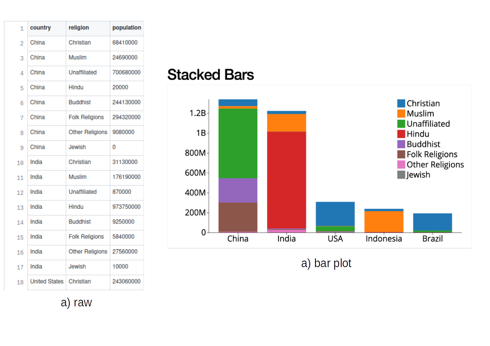ellycode.com
Well..., yes, but...
...(on a common scale) AI systems behave similar to human data analysts.
...Both using incoming and aggregate data to predict and make decisions.
- Tracking customer behavior, transactions, performance, etc. are widely used by retail companies, banks, and more.
- Many businesses have been using AI systems to handles large customer bases for customer service and marketing.
Data Visualisation is the bridge...
Between AI and humans for...
... visual data exploration
Important for data cleaning, feature extraction, data preparation, etc.
... making AI understandable and usable
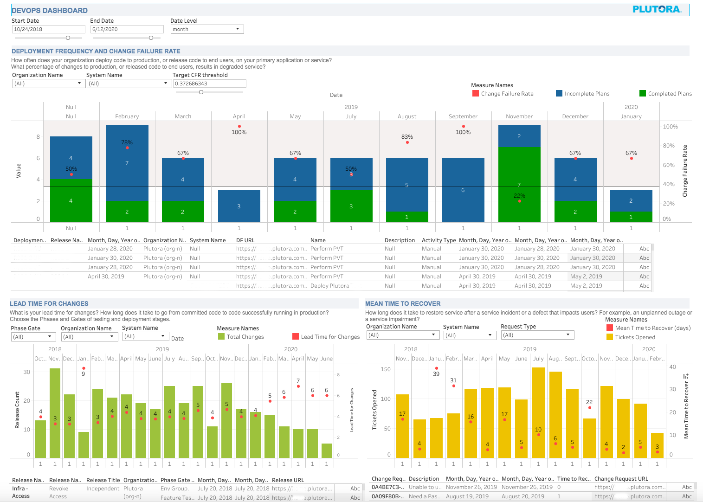ellycode.com
... communicating results
Presenting the AI results to analysts, clients, politcs,...
Exercise
Please read the following article, which more aspects can you find that link AI and visualisation? Collect these.
Data Visualization for Artificial Intelligence, and Vice VersaTime: 20 minutes
Extracted from the article
Data Visualisation for AI:
- Data Visualistaion as a Development and Evaluation Tool for AI
- It help people understand how AI models make their decision.
- Used for performance evaluation for AI systems.
- Used to select which AI model to chose based on the situation.
- It has too many dimensions sometimes, so data visualisation is crutial for people's understanding the AI algorithm.
- Education of AI Systems
- Visualisation of AI development helps both AI developers and people worried about AI adoption to better understand their system.
Extracted from the article
AI for Data Visualisation:
- Automate data visualisations tasks.
- Visual Analytics Dialog between Users and AI System: Questions are answered visually by the AI system.
- Image and text generation using AI from human input
- Visualisation Recommendation
Good and Bad Data Visualisation
Group Discussion
On the following 10 slides, you see bad examples for visualisations.
- Look at them and collect what you find.
- In 10 minutes you will be assigned to a group
- Discuss your results (10 Min) and write down your results and share in the collaborative editor (ilearn)
- Each group presents the results to the others (2 Min per group).
Bad example 1
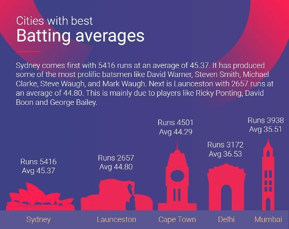ESPN CricInfo
- Colours
- Symbols misleading
- main conclusion unclear
Bad example 2
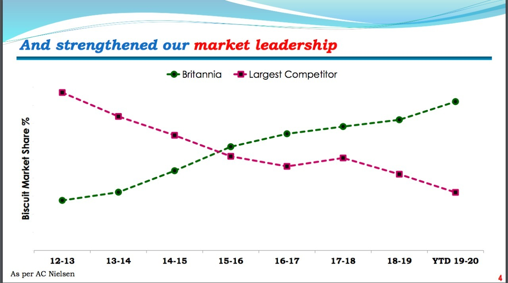Britannia
- Does not really show the leadership
- Market share not shown (y-axis)
- Unclear what x-axis shows
Bad example 3

ESPN CricInfo
- More than 100%
- Ranking not shown well
- Colour scheme not good
Bad example 4
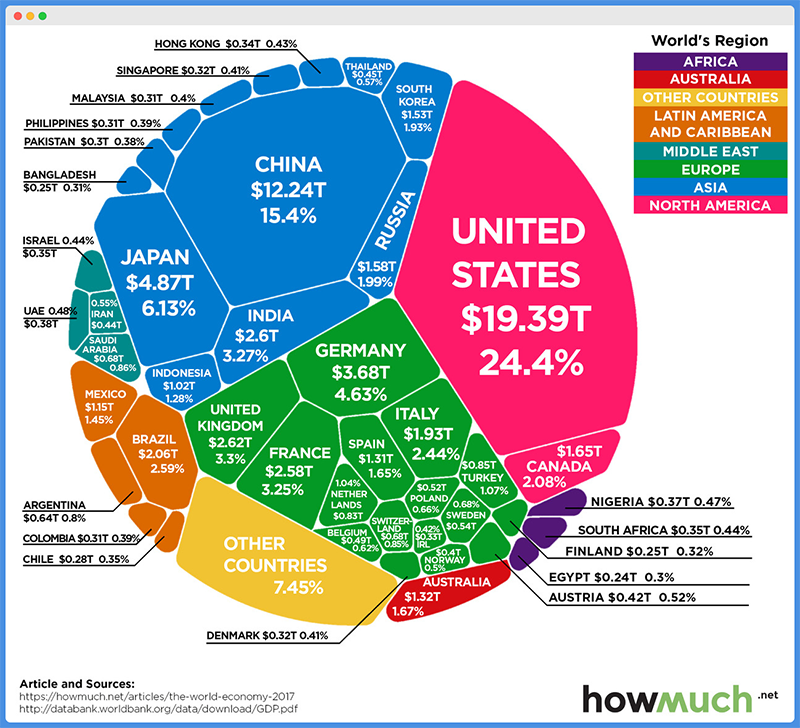howmuch
- Ordering unclear
- Hard to find small countries
- Location and clustering unclear (globe?)
Bad example 5
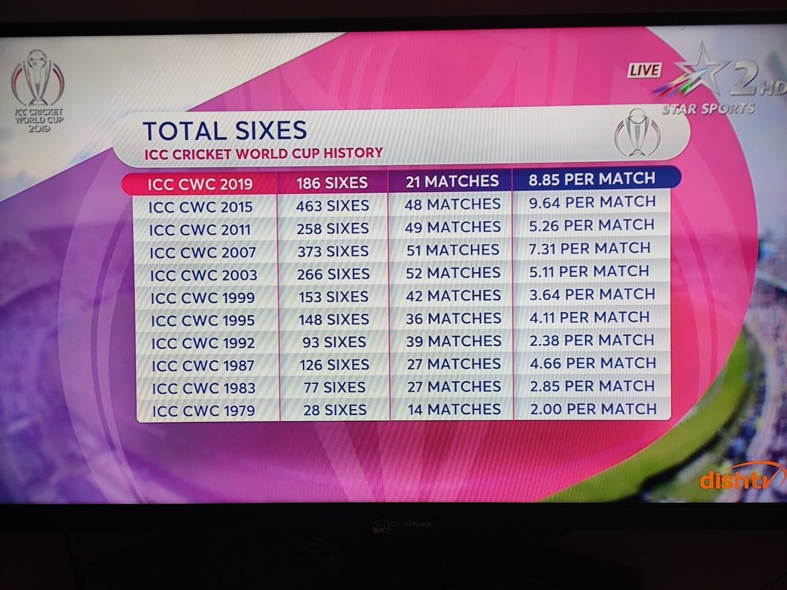DishTV
- To wordy
- Why first line emphasized?
- Why ordered by time?
Bad example 6
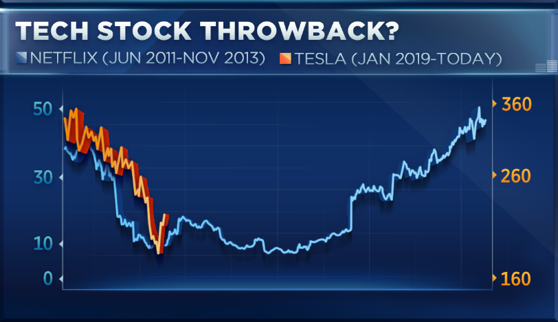CNBC
- What the key message?
- What is the x-axis?
- What are the y-axis?
Bad example 7
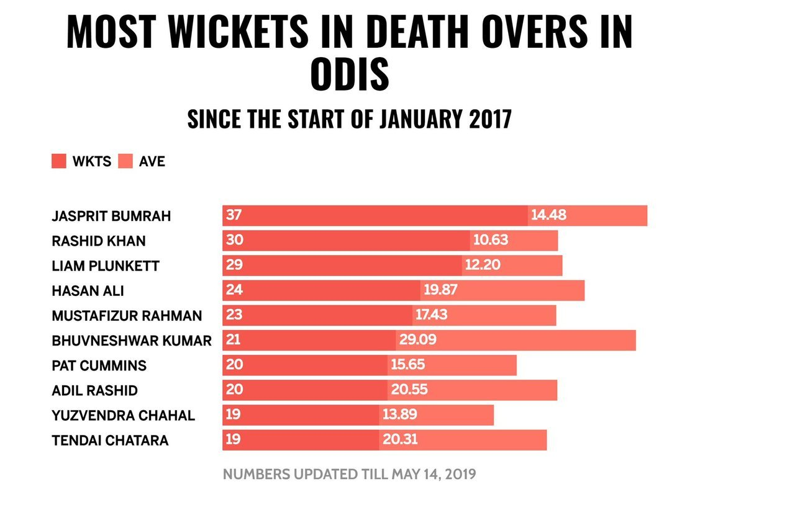ESPN CricInfo
- Colouring almost not differentiable
- Unclear key message
- Abbreviations unclear
Bad example 8
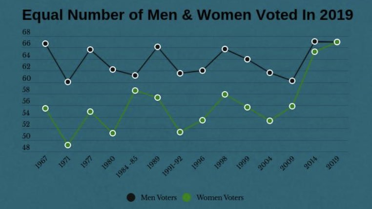TitleMax
- Colouring difficult to see
- What is the indication?
- What shows y-axis?
Bad example 9
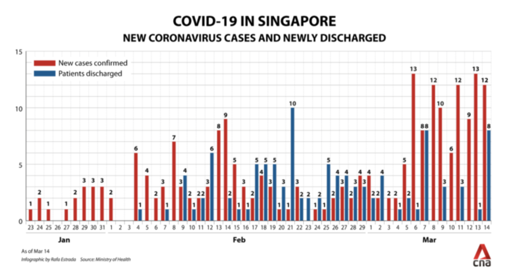CNA
- Unclear intention?
- Apparently wrong visuals
Bad example 10
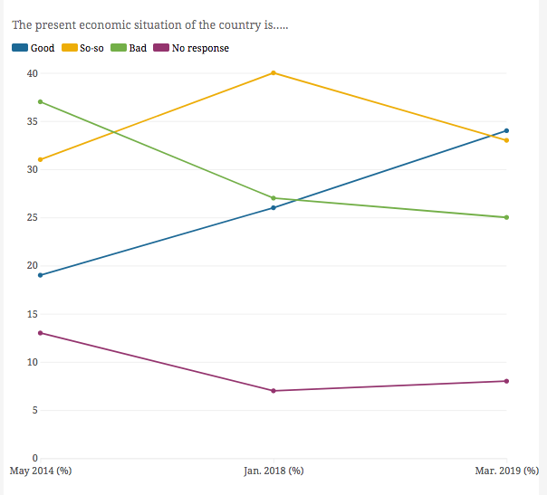CNA
- Wrong visuals
- Time distance different (4 vs. 1 year)
- y-axis unclear
Rules for good visuals
- Title: Engaging and clear, large enough, encouraging to viewers
- Text: Typos, Grammar, Punctuation
- Visuals: Essentials are clear, Minimal, good to read from distance
- Formatting: Enough space, too busy, crammed?
- Data: Only essential data shown?
Countinued...
- Key message: Clear to understand? Story comprehensible?
- Tooltips: Formatted?
- Data Sources: Credits given?
- Animations: Tested, working, non-misleading, and clear how to use?
Dashboards
Wikipedia
What is a Dashboard
Displays the most relevant information for one or more particular objectives, arranged on a single screen to allow monitoring at a glance.
Dashboards...
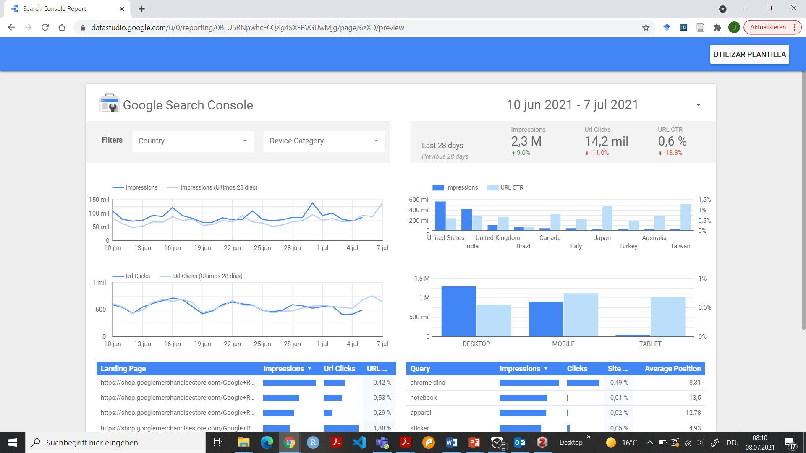...emphasize on graphics in order to efficiently communicate information and richer meaning.
Dashboards...
- ... are Visual Displays
- ... display mission-critical information.
- ... consolidate information from different sources.
- ...should fit on a single screen
Types of Dashboards
- Settings Dashboards in Operating Systems (Windows, IOS, Android)
- User Dashboards at Websites (e. g. Google)
- Show Key-Performance-Indicators of companies
- Executive information systems are based on Dashboards
Dashboards...
- ...show information in form of summaries or exceptions
- ...have small, concise, clear display mechanisms
- ...are customizable
Common Design mistakes
- become to large (multiple sceens)
- Supplying inadequate data
- Excessive detail or precision
- Use inappropriate visualisations
- Encoding data inaccurrately
- Miss to emphasize the important information
- Cluttering the display
- Misuse color
Exercise
Please read the following article:
"How narratives told by predictive analytics reconfigure roles, risk and sociality"Answer the following questions:
- What are the researchers trying to do with dashboards?
- What is the role of Machine Learning?
- What are their major findings?
Time: 30 Minutes
Exercise
R comes with the package Shiny which allows you to create webbased interactive visualisations and dashboards.
Please follow the lessons 1-4 of the linked tutorial (Shiny in seven lessons - not the video tutorial)
Shiny written Tutorials: Shiny in seven lessonsMakeover Monday
Each monday a new data set is published which then can be visualised and sent in.
https://www.makeovermonday.co.uk/